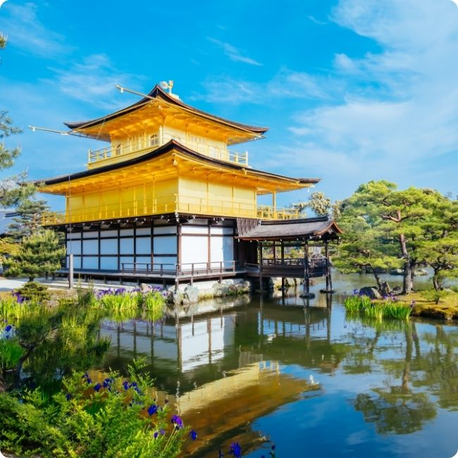
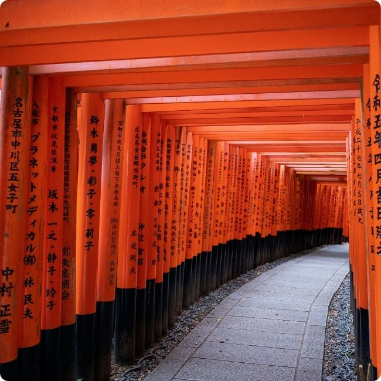

Kyoto
About Kyoto
Kyoto, Japan’s ancient capital, is a city where history and beauty come alive. With its peaceful temples, traditional wooden houses, and iconic geisha culture, it offers a glimpse into old Japan. Visitors can stroll through the Arashiyama Bamboo Grove, admire the golden Kinkaku-ji, or enjoy cherry blossoms along the Philosopher’s Path. Each season brings new charm, making Kyoto a timeless and unforgettable destination.
-
Kinkaku-ji
Figure 1: The Golden Pavilion, or Kinkaku-ji -
Fushimi Inari Taisha
Figure 2: The endless torii gates of Fushimi Inari Shrine